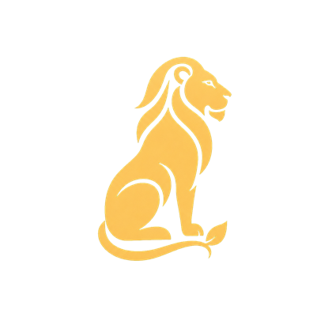

A complete brief for the logo designer — everything explored so far, the brand system it must live in, what worked, what to avoid, and the deliverables we need.
Prepared July 2026 · working draft — brand name architecture still provisional
The brand is from Junagadh — the only home of the Asiatic lion on earth. A generic lion throws that away. Every lion drawing must carry authentic Asiatic field marks:
Short, sparse mane — a neck ruff, never a big flowing African mane
Ears clearly visible above the mane
Longitudinal belly fold — the skin fold unique to Asiatic lions (one line is enough)
Lean, longer body; pronounced tail tuft — we like the tail ending in a leaf/bud shape as a quiet nod to the flower trade
Calm, guardian bearing — dignified, watchful; never roaring, never hunting
No crowns, shields, laurels or European heraldry
No jewellery-style diamonds or gems
No gold-foil textures, gradients or 3D shine — flat colour only
Must NOT resemble the Gujarat Tourism lion (orange block-print side profile)
No faux-Devanagari styling on Latin letters
Also required before any final: reverse-image + trademark search (monoline lions are a crowded category), and a clear visual distance from other planners' marks.
Elegant but generic (template-style pose, African mane hints); thin strokes fail at small sizes. Keep only as reference for line weight/colour.
Current master emblem
Floral-Mane Lion (Option A)
The family's marigolds and mogra woven into the mane — the most OWNABLE idea we have. Currently the website hero mark. Needs a cleaner vector redraw; too detailed for tiny sizes (that's the icon's job, below).

Explored — mane too African
Guardian, Flowing Mane (Option B)
Right pose and solidity; wrong mane. Superseded by the short-mane version but shows the solid-shape language we like.
Current small-size icon
Guardian, Short Mane (Option C)
Cleanest at 32px — currently the favicon, header icon and footer watermark. Needs refinement: calmer muzzle, tighter 3-shape ruff, leaf tail-tuft.
Earlier rejected directions (from the first agency round): a champagne gate-and-stars arch on navy (elegant but generic hotel-luxury) and a pale mint "V" gem mark (read as jewellery/spa, not events).
We are not choosing one logo — we are commissioning a small family. Detailed emblem for big moments, reduced icon for small ones, same animal in both.
Piece
Base direction
Where it lives
Master emblem
Floral-mane lion, redrawn vector, max ~12 bold shapes
Website hero, deck covers, signage, invitations
Small-size icon
Seated short-mane guardian, ≤10 shapes, reads at 24px
Favicon, app icon, embroidery, stamps, watermark
Roundel seal
Guardian inside two plain rings, name arched around
Social avatars, wax-stamp print, packaging sticker
Horizontal lockup
Icon + thin gold rule + two-line name
Website navbar, letterhead, e-mail footer
Alternate mark ideas
Worth sketching: lion beneath a slender toran archway (we build gateways); a Girnar twin-peak horizon with a half-marigold sun (no lion) as a secondary crest.
Style keywords
Flat vector · single gold #CFAA6D · consistent stroke logic · hand-engraved warmth in monoline discipline · Indian miniature-painting curve rhythm · museum restraint.
One-colour law
Every piece must survive: one-colour gold, one-colour teal, reversed ivory-on-dusk, black-and-white photocopy, and embroidery thread.
Full lockup + mark-only, each in: gold, teal, ivory-reversed, single-black
Transparent PNGs @ 2048px and 512px; favicon 32px test export
Clear-space and minimum-size specification sheet
One embroidery-ready simplified version
Scorecard (each candidate, 1–5)
Distinctive — could no other planner wear it?
Gir-true — anatomy + Junagadh soul
Small-size survival — honest 24px test
Both-grounds test — ivory Day and teal Dusk
Craft link — flowers / gateway / drape present?
Trademark-safe — search done, distance kept
See it in context
Live site (the logo's real home): mihirzalavadia.github.io/jvardhan-site · Design-system specimen: /style-preview.html · Questions → WhatsApp the family (number being finalised).
Note: brand name architecture (J.Vardhan vs. legacy Mali Mukesh endorsement) is still provisional — design the marks so the wordmark could change without redrawing the lion.